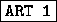
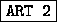
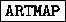
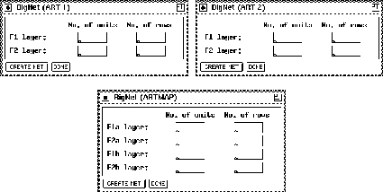
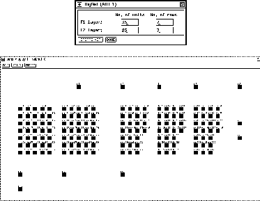
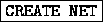

The creation of the ART networks is based on just a few parameters. Although the network topology for these models is rather complex, only four parameters for ART1 and ART2, and eight parameters for ARTMAP, have to be specified.
If you have selected the

,
or the
button in the BigNet menu, one of the windows shown in figure


The four parameters you have to specify for ART1 and ART2
are simple to choose. First
you have to tell BigNet the number of units (N) the F layer
consists of.
Since the F
layer
consists of.
Since the F layer has the same number of units, BigNet takes only
the value for F
layer has the same number of units, BigNet takes only
the value for F .
.
Next the way how these N units to be displayed has to be specified.
For this purpose enter the number of rows. An example for ART1 is
shown in figure  .
.
The same procedure is to be done for the F layer. Again you have
to specify the number of units M for the recognition
part
layer. Again you have
to specify the number of units M for the recognition
part of the F
of the F layer and the number
of rows.
layer and the number
of rows.
Pressing the  button will generate a network with
the specified parameters. If a network exists when pressing
button will generate a network with
the specified parameters. If a network exists when pressing

you will be prompted to assure that you really want to destroy the current network. A message tells you if the generation terminated successfully. Finally press the button to
close the BigNet panel.
button to
close the BigNet panel.
For ARTMAP things are slightly different. Since an ARTMAP network
exists of two ART1 subnets (ART and ART
and ART ), for both of them the
parameters described above have to be specified. This is the reason,
why BigNet (ARTMAP) takes eight instead of four parameters. For the
MAP field the number of units and the number of rows is taken from the
repective values for the F layer.
), for both of them the
parameters described above have to be specified. This is the reason,
why BigNet (ARTMAP) takes eight instead of four parameters. For the
MAP field the number of units and the number of rows is taken from the
repective values for the F layer.